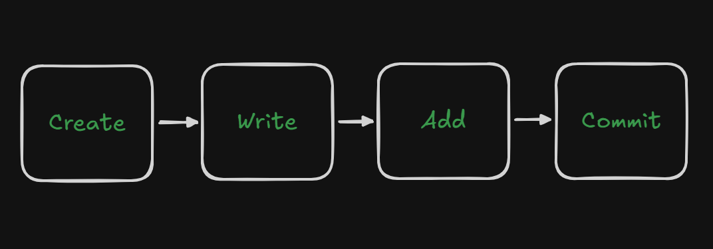

Terminology
Git and people who use it talk in a different terminology. For example, they don’t call it a folder, they call it a repository. They don’t call it an alternative timeline, they call it a branch. Although, I agree that alternative timeline is a better name for it. 😁
Step 1: Check Your Git Version
We have already downloaded Git on your system, and now you can check its version.
Step One: Open any IDE. In this case, we will use Visual Studio (you can download it from the official site). Once you have it open, use the shortcut to open the terminal.
- Going to the top menu and selecting View → Terminal
- Or using the shortcut key: Ctrl + ` (the backtick key, usually located under the Esc key)
git --version
This command will display the version of Git installed on your system. Git is a very stable software and doesn’t get any breaking changes in the majority of cases, at least in my experience.
Step 2: Complete Your Git & GitHub Setup (Git config)
Before we start exploring Git in action, let’s complete one-time setup for both Git and GitHub by configuring your basic identity. This includes setting your name and email — these are essential, as Git uses them to label your work every time you make a change (also called a commit).
GitHub has a lot of settings that you can change. You can change your username, email, and other settings. Whenever you checkpoint your changes, Git will add some information about you, such as your username and email, to the commit. There is a Git config file that stores all the settings that you have changed. You can also set preferences like what editor you'd like to use, and there are both global and repository-specific settings.
Let’s set up your email and username in this config file. I recommend you create an account on GitHub and then use the same email and username here for consistency.
git config --global user.email "your-email@example.com"git config --global user.name "Your Name"
This sets your global identity which will be used across all your Git projects. Now you can check your current configuration settings:
git config --list
This will display all the settings you've configured so far. If you ever want to change anything, you can always come back to update them. You can also create project-specific (repository-level) settings if needed later on.
Step 3: Understanding Git Tracking
Git doesn’t keep an eye on everything in your system — it only tracks the files and folders you tell it to. The moment you initialize a Git repository in a folder, Git starts watching what happens inside that folder.
To check what Git is currently tracking or ignoring inside your project folder, you can use:
git status
This command will show you all the tracked, modified, new (untracked), and staged files — giving you a live snapshot of your project's current state.
⚠️ If you haven’t initialized Git using
git init, running
git status will give you an error
like
"fatal: not a git repository (or any of the parent directories):
.git". So make sure you’ve initialized the folder first!
In the diagram above, all green boxes represent folders or files that Git is currently tracking — changes in them will be noticed and recorded by Git. Meanwhile, the red boxes show files or folders that Git is ignoring or unaware of.
If you want Git to start tracking a red (untracked) file, you simply
need to add it using
git add <filename>. Git is
all about control — it only tracks what you tell it to.
Step 4: Creating a Repository
Creating a repository means telling Git to start watching a folder on your system. It's just a regular folder where your project lives — you simply initialize it with Git.
git init
Running the git init command will
convert your current folder into a Git repository. This adds a hidden
.git directory to your project,
which Git uses to store and manage all version history and
configuration.
Step 5: Writing, Adding & Committing Code
Now that Git is watching your folder, it's time to actually make some changes. Here's how the typical Git workflow works — think of it as a three-step habit:
-
Write some code:
Create or edit a file in your project. This could be anything — a
simple
index.html, a style sheet, or a script file. -
Add the file to staging:
Once you’ve written some code, you’ll tell Git which files to track
using:
git add <filename>
git add .// adds everything in the folderThis places your file in the staging area — a space where changes are gathered before being saved permanently. Think of it as selecting which changes are ready to be snapshot.
-
Commit the changes:
When you’re confident with your changes, save them using a commit.
git commit -m "Add homepage structure"Always use the
-mflag to provide a clear commit message. This helps describe what you did, avoids terminal editors opening up unexpectedly, and keeps things clean and trackable.
A commit is like taking a snapshot of your current project. It captures the state of all staged files at that moment. This means you can always rewind, compare, or review your work at any point in the future.
You write →
git add to stage →
git commit -m "" to save.
Complete Git Flow
A complete Git flow, along with pushing the code to GitHub, looks like this:
Step 6: Viewing Commit Logs
Once you've made a few commits, you'll want to review what changes have been made over time. Git provides a powerful way to see your project history using:
git log
This command displays a list of all commits in reverse chronological order — showing details like the commit hash, author, date, and commit message.
If you prefer a cleaner and more concise view, try adding the --oneline flag:
git log --oneline
This shortens each commit to a single line, showing the abbreviated hash and the commit message — great for a quick overview of your history.
☕️ Need more power? Explore the full Git log documentation here.
✨ Pro tip: Use atomic commits — each commit should represent a single, focused change. This keeps your history clean, readable, and easy to debug or revert when necessary.
Using .gitignore
Not everything in your project needs to be tracked. The .gitignore file tells Git which files or folders to completely ignore. This helps keep your repository clean and free of clutter like temporary files, system configs, or huge dependency folders.
To use it, create a .gitignore file at the root of your project and list the paths you want Git to skip.
Here's a simple example:
node_modules/
.env
.vscode/In this setup:
- node_modules/ – skips all installed packages (common in Node.js projects)
- .env – protects your environment variables and secrets
- .vscode/ – ignores your editor’s personal settings
After setting this up, running git status will no longer show those ignored files — making your workflow cleaner and more secure.
🛡️ Pro tip: You can find pre-made .gitignore templates for different languages and frameworks at
github.com/github/gitignore.
🕰️ Reverting to a Previous State
Sometimes, you may want to go back to a previous commit — either just to view it or to completely roll back your changes. Here's how to do both.
🔍 View a Previous Commit (Detached HEAD)
If you just want to *view* a past commit without altering the current history, use:
git checkout <commit-hash>
This places you in a detached HEAD state — you’re not on any branch, just viewing a snapshot.
🌱 Create a Branch from That Commit
Want to continue work from that old commit? Create a new branch starting from it:
git checkout -b <new-branch-name>
Now you can start fresh from that historical point — perfect for hotfixes or alternate features.
⚠️ Roll Back Your Current Branch
If you're sure you want to move your branch back and discard all commits after a certain point:
git reset --hard <commit-hash>
This is a powerful (and dangerous) command. It permanently deletes all commits after the one you specify. Use with caution!
Conclusion
In this section, we have learned about the basics of git and how to
use it to track changes to your files and folders. We have also
learned about the different commands that you can use to interact with
your repository, such as init,
add,
commit,
log, etc.
By the end of this section, you should have a good understanding of how to use git and how to use it effectively to manage your code.